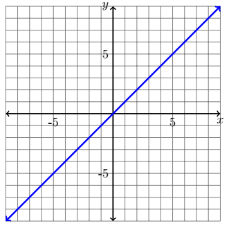
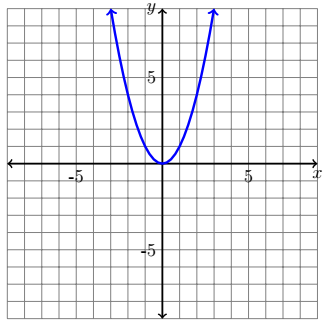
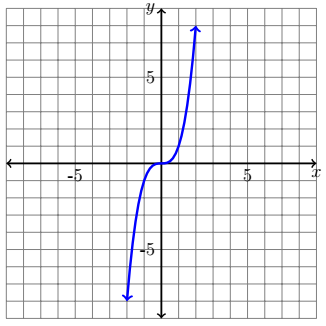
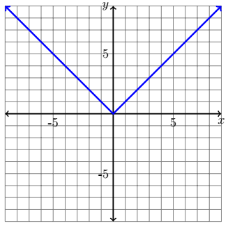
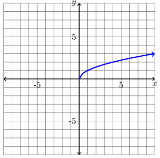
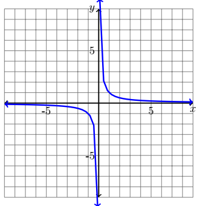
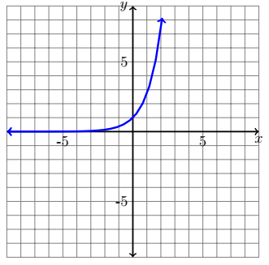
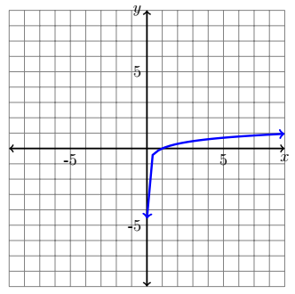

CH 1.3 – Parent Functions & Their Transformations
When it comes to graphs of functions, all functions are derived from about six basic functions that we call parent function(s). The six basic functions that almost all graphs are comprised of are: linear, quadratic, cubic, square root, absolute value, and rational.
Parent Functions
We are briefly going to review these six functions and how they look graphically and algebraically, the domain and range for each, and the end behaviors.

Unless it is a vertical line. In that case the domain is \(x = a\).
Unless it is a horizontal line. In that case the range is \(y = a\).

If \(a < 0\) then the range is \(\left(-\infty,\, f\!\left(\tfrac{-b}{2a}\right)\right]\).


If \(f(x) = -|x|\), then the range is \((-\infty, a]\).

The starting value will change depending on horizontal translations.
The starting value will change depending on vertical translations.

The excluded value will change depending on horizontal translations.
The excluded value will change depending on vertical translations.

This can change depending on vertical translations.

This can change depending on horizontal translations.
Transformations of Functions
From our six basic parent functions we can derive any other function that could be used for a number of reasons. Any function can undergo a number of transformations that change the parent function into another version of itself.
There are two main ways that we can categorize a transformation of the parent function. A transformation in which the shape of the parent function remains exactly the same is known as a rigid transformation. Other types of transformations that change the shape of the graph are known as non-rigid transformations.
Rigid Transformations
Vertical Translation
The first type of transformation that we are going to look at is a vertical translation. This type of transformation moves the entire graph of the function either up or down. Essentially our x-coordinates will remain the same but our y-coordinates will change.
![Reference card for vertical translations, titled Vertical Transformation. On the left, a text panel shows the general forms: h(x) equals f(x) plus c moves the graph up c units; h(x) equals f(x) minus c moves the graph down c units. Two equation examples are listed: h(x) equals square root of x plus 2 in red, and h(x) equals square root of x minus 3 in blue. On the right, a coordinate grid spanning negative 5 to 5 on both axes shows three square root curves sharing the same shape: the black parent curve starting at the origin, the red curve starting at (0, 2) shifted up two units, and the blue curve starting at (0, negative 3) shifted down three units. All three curves extend to the upper right with arrows.](images/1_3_9.png)
Notice how in the figure above, the shape of the parent function (square root) did not change — the only thing that changed is that each coordinate either moved up or down from the original parent function.
Horizontal Translation
The next type of transformation that we are going to look at is a horizontal translation. This type of transformation moves the entire graph of the function either left or right. Essentially our y-coordinates will remain the same but our x-coordinates will change \(h\) units.
![Reference card for horizontal translations, titled Horizontal Transformation. On the left, a text panel shows the general forms: h(x) equals f(x plus h) moves the graph left h units; h(x) equals f(x minus h) moves the graph right h units. Two equation examples are listed: h(x) equals (x plus 2) squared in red, and h(x) equals (x minus 3) squared in blue. On the right, a coordinate grid spanning negative 5 to 5 on both axes shows three upward-opening parabolas sharing the same shape: the black parent parabola with vertex at the origin, the red parabola with vertex shifted two units to the left at (negative 2, 0), and the blue parabola with vertex shifted three units to the right at (3, 0).](images/1_3_10.png)
Once again notice how the shape of the parent function (quadratic in this case) did not change. All that happened was the function shifted left or right from its original position. Also it is important to notice that the shift is opposite of what we want to think. Typically we think of negative as the left side of the graph and positive as the right side. But in this case, the minus \(h\) moves the graph to the right.
Reflections
The next type of transformation that we are going to look at is a reflection. This type of transformation flips the entire graph of the function either over the \(x\)-axis or the \(y\)-axis. Depending on which axis you reflect the function over will change the variable that has to be transformed. If you reflect the graph over the \(y\)-axis, then the \(x\)-coordinate becomes negated. However, if you reflect the graph over the \(x\)-axis, then the \(y\)-coordinate will become negated.
![Reference card for reflections, titled Reflections. On the left, a text panel shows the general forms: h(x) equals negative f(x) is a reflection over the x-axis; h(x) equals f(negative x) is a reflection over the y-axis. Two equation examples are listed: h(x) equals negative e to the x in red, and h(x) equals e to the negative x in blue. On the right, a coordinate grid spanning negative 5 to 5 on both axes shows three exponential curves: the black parent curve rising steeply to the upper right and approaching the x-axis from above on the left; the red curve reflected over the x-axis, descending steeply to the lower right and approaching the x-axis from below on the left; and the blue curve reflected over the y-axis, rising steeply to the upper left and approaching the x-axis from above on the right. All three curves have arrows on both ends and never actually touch the x-axis.](images/1_3_11.png)
Still notice that the shape of the parent function (exponential for this one) has not changed. All that changed was either the \(x\)-coordinate negated or the \(y\)-coordinate negated. It is important to note in this particular graph to remember that the exponential parent function will never equal zero. So, while this function looks like it is touching the \(x\)-axis, it in fact is not.
Non-Rigid Transformations
Non-rigid transformations are unlike the rigid ones — a non-rigid transformation is one in which the shape of the function is changed.
Vertical Stretch/Shrink
![Reference card for vertical stretch and shrink, titled Vertical Stretch/Shrink. On the left, a text panel shows the general form: h(x) equals c times f(x). If c is greater than 1 then it is a vertical stretch. If c is between 0 and 1 then it is a vertical shrink. Two equation examples are listed: h(x) equals 2 times the absolute value of x in red (stretched), and h(x) equals one-quarter times the absolute value of x in blue (shrunk). On the right, a coordinate grid spanning negative 5 to 5 on both axes shows three V-shaped absolute value graphs all with their vertex at the origin: the black parent function, the red graph with steeper arms (stretched vertically by 2), and the blue graph with shallower arms (shrunk vertically by one-quarter).](images/1_3_12.png)
With this transformation we can see that the vertex of our parent function (absolute value) did not change. But the shape of the graph did — it was stretched vertically by two, or it was shrunk vertically by a quarter. With a vertical stretch or shrink our x-coordinate will remain the same while we multiply our y-coordinate by \(c\).
Horizontal Stretch/Shrink
![Reference card for horizontal stretch and shrink, titled Horizontal Stretch/Shrink (corrected from the original LaTeX which incorrectly read Vertical Stretch/Shrink). On the left, a text panel shows the general form: h(x) equals f(c times x). If c is greater than 1 then it is a horizontal shrink. If c is between 0 and 1 then it is a horizontal stretch. Two equation examples are listed: h(x) equals (2x) squared in red (shrunk horizontally), and h(x) equals (one-half x) squared in blue (stretched horizontally). On the right, a coordinate grid spanning negative 5 to 5 on both axes shows three upward-opening parabolas all with their vertex at the origin: the black parent function, the red graph with narrower arms (shrunk horizontally by a factor of 2), and the blue graph with wider arms (stretched horizontally by a factor of one-half).](images/1_3_13.png)
Once again with this transformation we can see that the vertex of our parent function (quadratic) did not change. But the shape of the graph did — it was stretched horizontally by a half, or it was shrunk horizontally by two. With a horizontal stretch or shrink our y-coordinate will remain the same while we divide our x-coordinate by \(c\).
Now that we've looked at all of these transformations separately we will try a few examples that put multiple transformations together.
Example
Using the examples below, identify the parent function and transformation(s) that the parent function underwent.
a.) \(f(x) = 3\sqrt{x-4}\) b.) \(h(x) = \dfrac{-3}{x}+3\) c.) \(g(t) = (-3x)^2 - 2\)
Solution
a.) If we look at \(f(x) = 3\sqrt{x-4}\), we want to work from the innermost part out, like we would with order of operations. That means:
\(f(x) = 3\sqrt{\color{red}{x-4}}\) — Since the \(-4\) is inside the function, this is a horizontal translation 4 units right.
\(f(x) = \color{red}{3}\sqrt{x-4}\) — With the \(3\) being outside the function, this is a vertical stretch, since \(3 > 1\).
There are no other transformations in this function, which means that \(f(x)\) is the transformation of a square root function stretched vertically by a factor of 3 and translated 4 units right.
b.) \(h(x) = \dfrac{\color{red}{-3}}{x} + 3\) — working from the inside out again. The \(-3\) is actually two transformations in one. The \(3\), since it isn't with the \(x\), is a vertical stretch (the factor is greater than zero). The negative in front of the \(3\) is a reflection over the \(x\)-axis, because the negative is not with the \(x\).
\(h(x) = \dfrac{-3}{x} + \color{red}{3}\) — the last transformation this function undergoes is a vertical shift (translation) 3 units up, since it is positive.
Putting that all together means that \(h(x)\) is the transformation of the rational function reflected over the \(x\)-axis, vertically stretched by 3, and translated up 3 units.
c.) \(g(t) = (\color{red}{-3}x)^2 - 2\) — once again we always work from the inside out. With this function the \(-3\) (with the \(x\)) represents two different transformations. The \(3\) with the \(x\) means it is a horizontal shrink by a factor of 3. The negative is a reflection over the \(y\)-axis.
\(g(t) = (-3x)^2 - \color{red}{2}\) — since this \(-2\) is outside the function, it is a vertical translation down 2 units.
Putting it all together, \(g(t)\) is the transformation of the quadratic function horizontally shrunk by a factor of 3, reflected over the \(y\)-axis, and shifted down 2 units.
Example
From each of the descriptions below, compose the transformed parent function.
a.) The transformation of the quadratic function shifted three units left, reflected over the \(y\)-axis, then translated two units up vertically.
b.) The transformation of the square root function translated four units left, and horizontally shrunk with a factor of two.
c.) The transformation of the cubic function vertically stretched by a factor of four, and shifted five units down.
Solution
a.) The quadratic parent function \(h(x) = x^2\) when shifted three units left becomes \(h(x) = (x+3)^2\). Next, reflecting it over the \(y\)-axis gives us \(h(x) = (-x+3)^2\). Then, translating the graph up two units leaves us with the final function:
\[h(x) = (-x+3)^2 + 2\]b.) The square root parent function \(h(x) = \sqrt{x}\) after being translated four units left becomes \(h(x) = \sqrt{x+4}\). Next, applying the horizontal shrink by a factor of two gives us the final function:
\[h(x) = \sqrt{2x+4}\]c.) The cubic parent function \(h(x) = x^3\) needs to be stretched vertically by a factor of four, giving us \(h(x) = 4x^3\). Lastly, shifting the graph down five units leaves us with the final function:
\[h(x) = 4x^3 - 5\]Order of Transformations
Some suggestions when it comes to identifying or writing transformations:
Suggested Order When Applying Transformations
- Always start with the Horizontal Translations first.
- Apply Stretches/Shrinks second.
- Add in Reflections third.
- Lastly, apply the Vertical Translation up or down.
Keep in mind that not all transformed functions will have every transformation — it is acceptable to skip a step if a particular transformation is not present.
One of the key factors when trying to either determine or write transformations is to make sure that if it is horizontal, then it goes with the \(x\) value inside the function. Whereas vertical transformations are always outside the function. With those factors in mind, you should be able to work through any transformation problem.
Exercises
Exercises to be added at a later date.